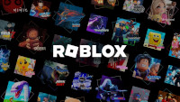
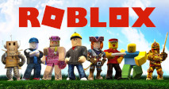
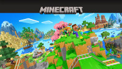
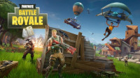
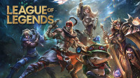

Conheça os jogos mais jogados no mundo! (Plataforma PC)
- Roblox
- Minecraft
- Counter Strike 2
- Fortnite
- League Of Legends
Projetado entre 2003/2004 e previamente sendo chamado de Dynablocks, foi renomeado lançado oficialmente em 2006. Marcou e atravessou gerações com sua jogabilidade simples e liberdade criativa para a comunidade. Conta com uma média de 380 milhões de jogadores por mês! Atravessou gerações e segue um fenômeno até os dias atuais.


Jogue grátis: https://www.roblox.com/pt/download
O maior da história, o divisor de águas e considerado por muitos (incluindo eu que vos fala), um jogo ÚNICO! Minecraft, tendo sua Alfa lançada em maio de 2009 conquistando um público fiel logo de cara! Seu lançamento ofical como jogo completo foi em novembro de 2011, pouco mais de 2 anos após sua Alfa. Com uma comunidade fiel e criativa, o jogo segue vivíssimo mesmo depois de praticamente 17 anos de estrada, contando a partir de sua Alfa! Marcou uma geração inteira e segue alcançando novos jogadores, contando com uma média mensal de 160 milhões de pessoas ativas!


Adquira aqui: https://www.minecraft.net/pt-br/store/minecraft-java-bedrock-edition-pc
Ah, o clássico CS! Criado como um mod de Half Life no fim dos anos 90, especificamente em 1999, por Minh Le e Jess Cliffe. Em 2000 tem seus direitos comprados pela Valve e é lançado oficalmente como Counter Strike, evoluindo posteriormente para versões muito conhecidas como CS 1.6, CS Source, CS:GO e atualmente como CS2.


Jogue grátis: https://www.counter-strike.net/cs2?l=brazilian
Lançado em 2017 em acesso antecipado somente com o "Salve o Mundo", Fortnite viria a se tornar um fenômeno do gênero Battle Royale que estava muito em alta na época, com títulos enormes como PUBG e H1Z1. O lançamento oficial foi em Setembro de 2017 o tornando um grande sucesso e causando um boom na bolha de games e popularizando ainda mais o gênero. Com sistema de passe de temporada e constates inovações sua criadora, Epic Games, mantém o jogo vivo e atualizado até os dias atuais contando com uma média de 100 milhões de jogadores mensalmente!


Jogue grátis: https://www.fortnite.com/?lang=pt-BR
Lançado em 27 de outubro de 2009, Legue Of Legends (ou lol ou liga da lendas para os íntimos) trata-se de um MOBA muito bem construído, com uma boa variedade de campeões desde seu lançamento e gameplay que prende o jogador. Desde seu lançamento recebe atualizações de mapa, campeões e mecânicas de jogo, o tornando um dos mais jogados do mundo! Seu cenário competitivo move nações na torcida por seus times do coração e pelo amor ao jogo! O universo do jogo é tão rico de histórias que cruzou barreiras e possui até uma série na Netflix baseada nas histórias de seus personagens! Contando com uma média de 117 milhões de jogadores mensais!


Jogue grátis: https://www.leagueoflegends.com/pt-br/